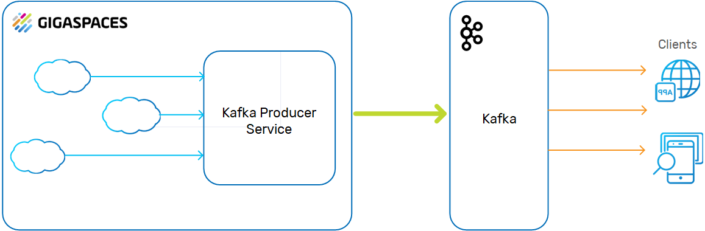
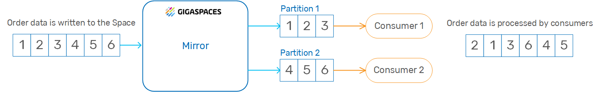
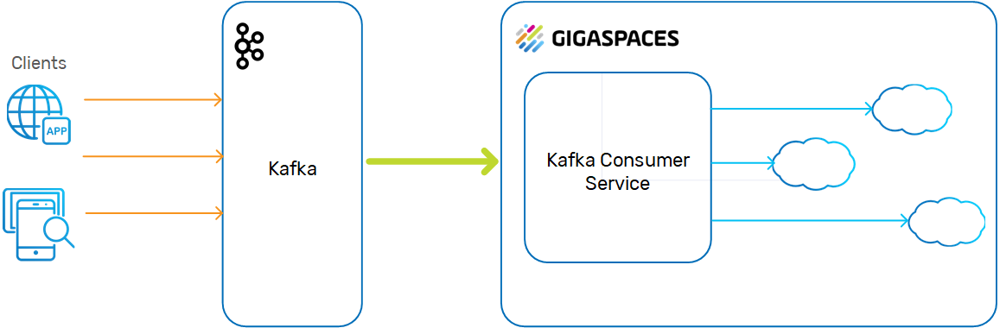

| Author | Release | Last Updated | Reference | Download |
|---|---|---|---|---|
| Aharon Moll | 14.2 | March 2019 | Apache Kafka | Github link |
Apache Kafka is a distributed publish-subscribe messaging system, which supports sending messages between applications, processes, and servers. A message is any kind of information that is sent from a producer (application that sends the messages) to a consumer (application that receives the messages).
Producers write their messages, or data, to Kafka topics. These topics are divided into partitions that function like logs. Each message is written to a partition and has a unique offset, or identifier. Consumers can specify a particular offset point where they can begin to read messages.
A Kafka server is called a broker, and a Kafka cluster contains one or more brokers. Topic partitions can reside on different brokers in the clusters, so that data in a specific topic can be split among multiple brokers. Consumers can be associated with consumer groups (each group reads from a specific topic). This enables high throughput because messages can be written and read in parallel to and from the different brokers in the cluster.
Kafka is designed to support persistent messaging with a O(1) disk structure that provides constant time performance, even with multiple terabytes of stored messages. Kafka provides high throughput even with very modest hardware, supporting hundreds of thousands of messages per second. Messages can be split among Kafka brokers, distributing consumption over a cluster of consumer machines while maintaining per-partition ordering semantics. For example, Kafka is often used to perform parallel data loading to Hadoop.
This page describes how to integrate
The SpaceSynchronizationEndpoint interface deployed as a Kafka producer service. The service consumes a batch of data grid operations, converts them into custom Kafka messages, and sends these to the Kafka broker using the Kafka Producer API.

The SpaceDocument with key/value pairs.
Kafka messages are sent via the network, so must be somehow serialized into bytes.
The default encoder utilizes the Java serialization mechanism, which implies Space classes (domain model) to be Serializable.
By default, Kafka messages are uniformly distributed across Kafka partitions. As such, even though data grid operations appear ordered in SpaceSynchronizationEndpoint, this doesn't imply the correct data processing ordering in Kafka consumers.

The Kafka persistence library provides a wrapper around the native Kafka Consumer API for the com.epam.openspaces.persistency.kafka.consumer.KafkaConsumer in the < folder.
The Space sits behind the Kafka consumer service, and the data objects are passed to the Space instances using routing keys.

You can download the example code from here. Unzip into an empty folder.
The example located under <project_root>/example. It demonstrates how to configure Kafka persistence and implements a simple Kafka consumer pulling data from Kafka and store in HsqlDB.
In order to run an example, please follow the instruction below:
Step 1: Install Kafka
Step 2: Start Zookeeper and Kafka server
bin/zookeeper-server-start.sh config/zookeeper.properties
bin/kafka-server-start.sh config/server.properties
Step 3: Build project
cd <project_root>
mvn clean install
Step 4: Deploy example to GigaSpaces
cd example
mvn os:deploy
Step 5: Check GigaSpaces log files, there should be messages from the Feeder and Consumer.
The following maven dependency needs to be included in your project in order to use Kafka persistence. This artifact is built from <project_rood>/kafka-persistence source directory.
<dependency>
<groupId>com.epam</groupId>
<artifactId>kafka-persistence</artifactId>
<version>1.0-SNAPSHOT</version>
</dependency>
Here is an example of the Kafka Processing Unit configuration:
<?xml version="1.0" encoding="UTF-8"?>
<beans xmlns="http://www.springframework.org/schema/beans"
xmlns:xsi="http://www.w3.org/2001/XMLSchema-instance"
xmlns:os-core="http://www.openspaces.org/schema/core"
xsi:schemaLocation="http://www.springframework.org/schema/beans http://www.springframework.org/schema/beans/spring-beans-3.1.xsd
http://www.openspaces.org/schema/core http://www.openspaces.org/schema/9.1/core/openspaces-core.xsd">
<!--
Spring property configurer which allows us to use system properties (such as user.name).
-->
<bean id="propertiesConfigurer" class="org.springframework.beans.factory.config.PropertyPlaceholderConfigurer"/>
<!--
Enables the usage of @GigaSpaceContext annotation based injection.
-->
<os-core:giga-space-context/>
<!--
A bean representing a space (an IJSpace implementation).
-->
<os-core:space id="space" url="/./space" schema="default" mirror="true">
<os-core:space-type type-name="Product">
<os-core:id property="CatalogNumber"/>
<os-core:basic-index path="Name"/>
<os-core:extended-index path="Price"/>
</os-core:space-type>
</os-core:space>
<!--
OpenSpaces simplified space API built on top of IJSpace/JavaSpace.
-->
<os-core:giga-space id="gigaSpace" space="space" />
</beans>
<?xml version="1.0" encoding="UTF-8"?>
<beans xmlns="http://www.springframework.org/schema/beans"
xmlns:xsi="http://www.w3.org/2001/XMLSchema-instance"
xmlns:os-core="http://www.openspaces.org/schema/core"
xsi:schemaLocation="http://www.springframework.org/schema/beans http://www.springframework.org/schema/beans/spring-beans.xsd
http://www.openspaces.org/schema/core http://www.openspaces.org/schema/9.1/core/openspaces-core.xsd">
<!--
Spring property configurer which allows us to use system properties (such as user.name).
-->
<bean id="propertiesConfigurer" class="org.springframework.beans.factory.config.PropertyPlaceholderConfigurer"/>
<!--
Enables the usage of @GigaSpaceContext annotation based injection.
-->
<os-core:giga-space-context/>
<!--
A bean representing a space (an IJSpace implementation).
-->
<os-core:space id="space" url="/./space" schema="default" mirror="true">
<os-core:space-type type-name="Product">
<os-core:id property="CatalogNumber"/>
<os-core:basic-index path="Name"/>
<os-core:extended-index path="Price"/>
</os-core:space-type>
</os-core:space>
<!--
OpenSpaces simplified space API built on top of IJSpace/JavaSpace.
-->
<os-core:giga-space id="gigaSpace" space="space" />
</beans>
Here is an example of the Kafka Space Synchronization Endpoint configuration:
<?xml version="1.0" encoding="UTF-8"?>
<beans xmlns="http://www.springframework.org/schema/beans"
xmlns:xsi="http://www.w3.org/2001/XMLSchema-instance"
xmlns:os-core="http://www.openspaces.org/schema/core"
xmlns:os-events="http://www.openspaces.org/schema/events"
xmlns:os-remoting="http://www.openspaces.org/schema/remoting"
xmlns:os-sla="http://www.openspaces.org/schema/sla"
xsi:schemaLocation="http://www.springframework.org/schema/beans http://www.springframework.org/schema/beans/spring-beans-3.1.xsd
http://www.openspaces.org/schema/core http://www.openspaces.org/schema/9.1/core/openspaces-core.xsd
http://www.openspaces.org/schema/events http://www.openspaces.org/schema/9.1/events/openspaces-events.xsd
http://www.openspaces.org/schema/remoting http://www.openspaces.org/schema/9.1/remoting/openspaces-remoting.xsd
http://www.openspaces.org/schema/sla http://www.openspaces.org/schema/sla/9.1/openspaces-sla.xsd">
<bean id="propertiesConfigurer" class="org.springframework.beans.factory.config.PropertyPlaceholderConfigurer">
<property name="locations">
<list>
<value>classpath:kafka.properties</value>
</list>
</property>
</bean>
<bean id="kafkaSpaceSynchronizationEndpoint" class="com.epam.openspaces.persistency.kafka.KafkaSpaceSynchronizationEndpointFactoryBean">
<property name="producerProperties">
<props>
<!-- Kafka producer properties. Consult Kafka documentation for a list of available properties -->
<prop key="metadata.broker.list">${metadata.broker.list}</prop>
<prop key="request.required.acks">${request.required.acks}</prop>
</props>
</property>
</bean>
<!--
The mirror space. Uses the Kafka external data source. Persists changes done on the Space that
connects to this mirror space into the Kafka.
-->
<os-core:mirror id="mirror" url="/./mirror-service" space-sync-endpoint="kafkaSpaceSynchronizationEndpoint" operation-grouping="group-by-replication-bulk">
<os-core:source-space name="space" partitions="2" backups="1"/>
</os-core:mirror>
</beans>
<?xml version="1.0" encoding="UTF-8"?>
<beans xmlns="http://www.springframework.org/schema/beans"
xmlns:xsi="http://www.w3.org/2001/XMLSchema-instance"
xmlns:os-core="http://www.openspaces.org/schema/core"
xmlns:os-events="http://www.openspaces.org/schema/events"
xmlns:os-remoting="http://www.openspaces.org/schema/remoting"
xmlns:os-sla="http://www.openspaces.org/schema/sla"
xsi:schemaLocation="http://www.springframework.org/schema/beans http://www.springframework.org/schema/beans/spring-beans.xsd
http://www.openspaces.org/schema/core http://www.openspaces.org/schema/9.1/core/openspaces-core.xsd
http://www.openspaces.org/schema/events http://www.openspaces.org/schema/9.1/events/openspaces-events.xsd
http://www.openspaces.org/schema/remoting http://www.openspaces.org/schema/9.1/remoting/openspaces-remoting.xsd
http://www.openspaces.org/schema/sla http://www.openspaces.org/schema/sla/9.1/openspaces-sla.xsd">
<bean id="propertiesConfigurer" class="org.springframework.beans.factory.config.PropertyPlaceholderConfigurer">
<property name="locations">
<list>
<value>classpath:kafka.properties</value>
</list>
</property>
</bean>
<bean id="kafkaSpaceSynchronizationEndpoint" class="com.epam.openspaces.persistency.kafka.KafkaSpaceSynchronizationEndpointFactoryBean">
<property name="producerProperties">
<props>
<!-- Kafka producer properties. Consult Kafka documentation for a list of available properties -->
<prop key="metadata.broker.list">${metadata.broker.list}</prop>
<prop key="request.required.acks">${request.required.acks}</prop>
</props>
</property>
</bean>
<!--
The mirror space. Uses the Kafka external data source. Persists changes done on the Space that
connects to this mirror space into the Kafka.
-->
<os-core:mirror id="mirror" url="/./mirror-service" space-sync-endpoint="kafkaSpaceSynchronizationEndpoint" operation-grouping="group-by-replication-bulk">
<os-core:source-space name="space" partitions="2" backups="1"/>
</os-core:mirror>
</beans>
For more information on the Mirror service see asynchronous persistence
Please consult Kafka documentation for the full list of available producer properties. The default properties applied to Kafka producer are the following:
| Property | Default value | Description |
|---|---|---|
| key.serializer.class | com.epam.openspaces.persistency.kafka. protocol.impl.serializer.KafkaMessageKeyEncoder |
Message key serializer of default Gigaspace-Kafka protocol |
| serializer.class | com.epam.openspaces.persistency.kafka. protocol.impl.serializer.KafkaMessageEncoder |
Message serializer of default Gigaspace-Kafka protocol |
You can override the default properties if there is a need to customize GigaSpace-Kafka protocol. See Customization section below for details.
In order to associate a Kafka topic with the domain model class, the class needs to be annotated with the @KafkaTopic annotation and declared as Serializable. Here is an example
@KafkaTopic("user_activity")
@SpaceClass
public class UserActivity implements Serializable {
...
}
To configure a Kafka topic for a SpaceDocuments or Extended SpaceDocument, the property KafkaPersistenceConstants.SPACE_DOCUMENT_KAFKA_TOPIC_PROPERTY_NAME should be added to document. Here is an example
public class Product extends SpaceDocument {
public Product() {
super("Product");
super.setProperty(SPACE_DOCUMENT_KAFKA_TOPIC_PROPERTY_NAME, "product");
}
It's also possible to configure the name of the property which defines the Kafka topic for SpaceDocuments. Set spaceDocumentKafkaTopicName to the desired value as shown below.
<bean id="kafkaSpaceSynchronizationEndpoint" class="com.epam.openspaces.persistency.kafka.KafkaSpaceSynchrspaceDocumentKafkaTopicNameonizationEndpointFactoryBean">
...
<property name="spaceDocumentKafkaTopicName" value="topic_name" />
</bean>
AbstractKafkaMessage, AbstractKafkaMessageKey, AbstractKafkaMessageFactory.KafkaMessageDecoder and KafkaMessageKeyDecoder.